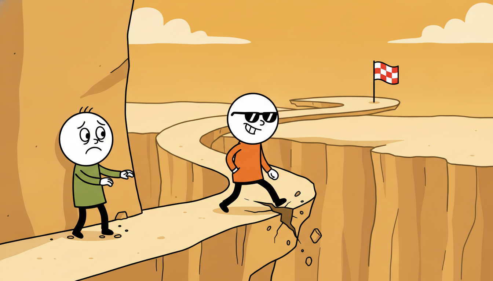

"Every move I have ever made is written down in me, one cell per state and action, and the numbers keep changing. I used to think the cell for 'step off the cliff' would settle high; experience has corrected me. I am not clever. I am only patient, and I have a very long memory."
A Q-Table Slowly Filling In the Value of Every Move
The two previous sections estimated how good a fixed policy is; this one closes the loop and learns how to act. The trick is to estimate not a state value $V(s)$ but an action value $Q(s,a)$, the expected return of taking action $a$ in state $s$ and behaving well thereafter, because once you hold $Q$ you can improve the policy without a model: just pick the action with the largest $Q$. Wrap that greedy improvement around a value estimate that is itself updated from sampled transitions and you have generalized policy iteration driven entirely by experience, the engine of nearly all of reinforcement learning. Two algorithms realize this engine with a one-symbol difference. SARSA updates each action value toward the value of the action the agent actually took next, so it learns the value of the policy it is following, exploration and all; it is on-policy. Q-learning updates toward the value of the best next action regardless of what was taken, so it learns the optimal value function while following an exploratory policy; it is off-policy. That single difference, "the action you took" versus "the best action available", is the whole of this section, and it shows up dramatically on the cliff-walking task, where SARSA learns a cautious detour and Q-learning learns the optimal edge-of-the-cliff path. We derive both updates, state the conditions under which they converge, preview the deadly triad that makes the off-policy case dangerous once we add function approximation in Chapter 25, and implement both from scratch on a gymnasium cliff environment before collapsing them to a library helper.
In Section 24.4 we estimated the value of a fixed policy from sampled returns, using temporal-difference learning to bootstrap a value estimate one transition at a time. That is prediction: given a way of behaving, how good is it? This section turns to control: not measuring a fixed policy but searching for a good one. The bridge between the two is short and is the central idea of the chapter. The Markov decision process of Chapter 22 told us that if we knew the optimal action-value function $Q^\star(s,a)$ we could act optimally by choosing $\arg\max_a Q^\star(s,a)$ in every state, no model of the dynamics required. So control reduces to learning a good $Q$ from experience, and the prediction machinery of Section 24.4, adapted to estimate action values rather than state values, is exactly the tool that does it. We use the unified notation of Appendix A throughout: $s$ a state, $a$ an action, $r$ a reward, $\gamma$ the discount factor, $Q(s,a)$ the action-value estimate, and $\pi$ the policy.
Why two algorithms rather than one? Because there are two honest answers to the question "toward what value should I update?", and they produce genuinely different agents. One answer learns the value of the cautious, exploring policy you are actually running; the other learns the value of the fearless optimal policy you wish you were running. Neither is wrong. Which you want depends on whether the cost of exploration is paid in a simulator you can reset or on real hardware that breaks, and the cliff-walking experiment in subsection two makes that distinction visible in a single plot. Understanding precisely where SARSA and Q-learning diverge, and why, is the conceptual core of tabular reinforcement learning and the foundation for every deep variant in Chapter 25.
The competencies this section installs are four. First, to see control as generalized policy iteration driven by sampled experience: estimate $Q$, act greedily with respect to it, repeat. Second, to write down and explain the SARSA and Q-learning update rules and to name exactly which term makes one on-policy and the other off-policy. Third, to reason about exploration during control (the $\varepsilon$-greedy schedule and the GLIE conditions for convergence) and to recognize the deadly triad that threatens the off-policy case once we leave the tabular world. Fourth, to implement both algorithms from scratch on a gymnasium environment, observe their different learned paths, and reproduce them with a few lines of a tabular-RL library.
1. From Value Estimation to Control Beginner
Recall the structure of policy iteration from Chapter 22: alternate policy evaluation (compute the value of the current policy) with policy improvement (make the policy greedy with respect to that value), and the pair converges to the optimal policy. That scheme assumed a known model: improvement needed $\max_a \sum_{s'} P(s'\mid s,a)[r + \gamma V(s')]$, which requires the transition probabilities $P$. The whole reason action values exist is to remove that requirement. If we estimate $Q(s,a)$ directly rather than $V(s)$, then policy improvement becomes the model-free $\pi'(s) = \arg\max_a Q(s,a)$, a lookup with no sum over next states and no transition model at all. Action values are state values with the first action pulled out and made explicit precisely so that improvement is a free operation.
This gives the template for all of the chapter's control algorithms, called generalized policy iteration (GPI): interleave a partial, sampled policy evaluation with a greedy improvement step, and do not wait for either to finish before starting the other. We do not evaluate the policy to convergence; we take one temporal-difference step toward its value. We do not improve to a fixed point; we nudge the policy a little more greedy. The two processes chase each other, and under the right conditions they meet at the optimal $Q^\star$ and its greedy policy. Figure 24.5.1 draws the loop, with the value estimate and the policy each pulling the other upward.
One subtlety separates control from the prediction of Section 24.4 and forces everything interesting in the rest of this section. If the agent always acts greedily with respect to its current $Q$, it will commit early to whatever looked good first and never sample the alternatives that might be better, so its estimates of the unchosen actions stay frozen at their initial values and the policy can lock onto a suboptimal action forever. Control therefore must explore: it must sometimes take an action that is not currently the greedy one, purely to keep its action-value estimates honest. The standard device, carried forward from the bandit setting of Section 24.1 and revisited in subsection three, is the $\varepsilon$-greedy policy: act greedily with probability $1 - \varepsilon$ and uniformly at random with probability $\varepsilon$. The presence of that exploratory randomness in the behavior is exactly what makes the on-policy versus off-policy distinction of the next subsection non-trivial.
The single reason reinforcement learning estimates $Q(s,a)$ rather than $V(s)$ is that policy improvement with $V$ needs the transition model (you must look ahead one step through $P(s'\mid s,a)$ to compare actions), while improvement with $Q$ is a pure lookup, $\pi'(s) = \arg\max_a Q(s,a)$, that needs nothing but the table itself. Action values absorb the one-step lookahead into the value function so that acting greedily costs nothing. Everything downstream, both algorithms of this section and every deep $Q$ method of Chapter 25, exists to estimate this $Q$ from experience so that the free $\arg\max$ can drive control.
2. SARSA and Q-Learning: The One-Symbol Difference Intermediate

Both algorithms update $Q(s,a)$ from a single transition using the same temporal-difference template inherited from Section 24.4: move the current estimate a small step $\alpha$ toward a target, where the target is the observed reward plus the discounted value of the next state. They differ only in how they value the next state, and that single choice is the entire content of on-policy versus off-policy learning.
SARSA takes its name from the quintuple it uses, $(s, a, r, s', a')$: state, action, reward, next state, and the next action actually chosen by the current policy. It updates toward the value of that next action:
$$Q(s,a) \;\leftarrow\; Q(s,a) + \alpha\Big[\,r + \gamma\,Q(s',a') - Q(s,a)\,\Big], \qquad a' \sim \pi(\cdot \mid s').$$Because $a'$ is drawn from the same $\varepsilon$-greedy policy the agent is following, SARSA estimates the value of that policy, exploration included. It is on-policy: the policy being evaluated and the policy generating the data are one and the same. The bracketed quantity $\delta = r + \gamma Q(s',a') - Q(s,a)$ is the temporal-difference error, the surprise between the bootstrapped target and the current estimate, and the update simply walks $Q(s,a)$ a fraction $\alpha$ of the way to remove that surprise.
Q-learning changes one symbol: instead of the value of the action actually taken, it uses the value of the best available next action, the $\max$ over $a'$:
$$Q(s,a) \;\leftarrow\; Q(s,a) + \alpha\Big[\,r + \gamma\,\max_{a'} Q(s',a') - Q(s,a)\,\Big].$$The target now contains $\max_{a'} Q(s',a')$, the value of acting greedily from $s'$ onward, which is independent of whatever exploratory action the agent will in fact take next. So Q-learning estimates the optimal action-value function $Q^\star$ directly, while the behavior that generates its data is still the exploratory $\varepsilon$-greedy policy. The policy being learned (greedy) differs from the policy being followed (exploratory): Q-learning is off-policy. The $\max$ is exactly the sampled, one-state version of the Bellman optimality operator from Chapter 22, which is why its fixed point is $Q^\star$ rather than the value of any particular behavior.
Set the two targets side by side and the entire distinction is one term: SARSA uses $Q(s', a')$ for the action the policy took, Q-learning uses $\max_{a'} Q(s', a')$ for the action the policy would take if greedy. When the policy is already greedy the two coincide; the gap between them is precisely the gap that exploration opens, and it is the gap that the cliff walk below makes visible. Figure 24.5.2 contrasts the two backup targets on the same transition.
The consequence of this difference is sharpest on Sutton and Barto's classic cliff-walking gridworld, a corridor from a start cell to a goal cell with a row of cliff cells along the bottom edge; stepping into the cliff incurs a large negative reward and snaps the agent back to the start. There are two reasonable routes. The optimal path hugs the cliff edge, the shortest route, but one unlucky exploratory step there falls in. The safe path detours one row up, slightly longer but with no neighboring cliff. Q-learning, learning the value of the greedy policy, converges to the optimal cliff-edge path, because under a purely greedy policy that path never falls in; yet while it is still training with $\varepsilon > 0$ it occasionally falls off the cliff and so collects a lower online return during learning. SARSA, learning the value of the exploring policy it actually runs, sees that the cliff-edge path is dangerous given its own random missteps and so learns the safe detour, earning a higher return during training even though its final greedy policy is one step longer. Optimal-but-risky versus safe-but-suboptimal: the same environment, the same exploration, two different lessons learned, entirely because of where the target's next-state value comes from.
Take a single transition near the cliff: the agent is in state $s$, takes action $a$ (a step rightward along the edge), receives reward $r = -1$ (one time-step cost, it did not fall), and lands in $s'$. Let the discount be $\gamma = 0.9$ and the step size $\alpha = 0.5$. The current estimates at $s'$ are $Q(s', \text{right}) = -8$ (the cliff-edge action, low because exploration there sometimes falls), $Q(s', \text{up}) = -5$, and $Q(s', \text{down}) = -30$ (steps into the cliff). The action the $\varepsilon$-greedy policy actually selects next is the exploratory $a' = \text{down}$. Suppose $Q(s,a) = -6$ before the update.
SARSA uses the action taken, $a' = \text{down}$, with value $-30$: $\;\delta = r + \gamma Q(s', a') - Q(s,a) = -1 + 0.9(-30) - (-6) = -1 - 27 + 6 = -22$, so $Q(s,a) \leftarrow -6 + 0.5(-22) = -17$. The bad exploratory step poisons the value of the cliff-edge action, teaching SARSA the edge is dangerous.
Q-learning uses $\max_{a'} Q(s', a') = Q(s', \text{up}) = -5$: $\;\delta = -1 + 0.9(-5) - (-6) = -1 - 4.5 + 6 = 0.5$, so $Q(s,a) \leftarrow -6 + 0.5(0.5) = -5.75$. Ignoring the exploratory misstep, Q-learning keeps the cliff-edge action attractive. Same transition, same numbers, one symbol of difference ($Q(s',a')$ versus $\max_{a'}Q(s',a')$), and the two estimates move in opposite directions: SARSA toward caution, Q-learning toward the optimal edge.
3. Exploration, Convergence, and the Deadly Triad Intermediate
Both algorithms only work if exploration keeps every action's estimate alive, and both only converge if that exploration is annealed correctly. The exploration device is the $\varepsilon$-greedy policy already introduced, and it is worth pausing on it as a deliberate callback.
The exploration-exploitation tension at the heart of control is not new; it is the bandit problem of Section 24.1 with state added. There, a single-state agent had to balance pulling the arm that looked best against pulling others to refine its estimates, and $\varepsilon$-greedy, optimistic initialization, and UCB were the answers. In the full reinforcement-learning setting every state is, locally, its own bandit: the agent must keep sampling non-greedy actions to learn their values, while mostly exploiting what it knows. SARSA and Q-learning inherit $\varepsilon$-greedy wholesale from the bandit chapter; the only addition is that the "arms" now depend on the state and that the value of an arm includes the discounted future, not just the immediate reward. The exploration schedule that Section 24.6 studies in depth is the same schedule that governs the bandit.
Convergence to the optimal policy is guaranteed under a named set of conditions called GLIE: Greedy in the Limit with Infinite Exploration. The two halves are exactly what the name says. Infinite exploration: every state-action pair must be visited infinitely often in the limit, so no action's value stays unestimated; an $\varepsilon$-greedy policy with $\varepsilon > 0$ satisfies this. Greedy in the limit: the policy must become greedy as learning proceeds, so that the policy whose value SARSA estimates actually converges to the optimal greedy policy; this requires annealing $\varepsilon \to 0$, for example $\varepsilon_t = 1/t$. Together with the Robbins-Monro step-size conditions on $\alpha$ ($\sum_t \alpha_t = \infty$ and $\sum_t \alpha_t^2 < \infty$, satisfied by schedules like $\alpha_t = 1/t$), GLIE guarantees that SARSA converges to $Q^\star$ and its optimal policy. Q-learning is gentler on the exploration side: because its target already uses the greedy $\max$, it converges to $Q^\star$ under the same step-size conditions for any behavior policy that keeps visiting every state-action pair, even one that never becomes greedy. That robustness, learning the optimal value while behaving arbitrarily (as long as you keep exploring), is the practical superpower of off-policy learning and the reason every replay-buffer method of Chapter 25 is built on Q-learning rather than SARSA.
That same off-policy robustness, however, hides a trap that does not bite in the tabular setting of this section but will dominate the next chapter. When three ingredients are combined, learning can diverge outright, with value estimates running off to infinity rather than converging. Richard Sutton named the trio the deadly triad:
- Function approximation: representing $Q$ with a parametric model (a neural network) rather than an exact table, so an update to one state-action pair changes the estimates of many others.
- Bootstrapping: updating an estimate toward a target that itself contains an estimate (the $\gamma Q(s', \cdot)$ term), as every temporal-difference method does, rather than toward an unbiased Monte-Carlo return.
- Off-policy training: learning about one policy (the greedy target) from data generated by another (the exploratory behavior), exactly what the Q-learning $\max$ does.
Any two of these together are safe; all three at once can diverge. Tabular Q-learning, the algorithm of this section, has bootstrapping and off-policy training but not function approximation (the table is exact), so it converges. Deep Q-learning, the subject of Chapter 25 (reached via the table of contents), has all three, and the entire apparatus of target networks, experience replay, and careful learning rates exists to tame the triad that this section's tabular safety quietly conceals. We flag it here so that the smooth convergence you are about to see in code is read correctly: it is a property of the table, not a license to assume the same recipe is stable once the table becomes a network.
Most algorithm names are aspirational (a "support vector machine" supports nothing you can lean on). SARSA is refreshingly literal: the name is the data it consumes, $(s, a, r, s', a')$, read left to right. You could reconstruct the entire update rule from the acronym alone if you knew the temporal-difference template, because the letters list, in order, every quantity the update touches. Q-learning, by contrast, is named for the letter it estimates; if it followed SARSA's convention it would have to be called SARS-MAX, which sounds less like an algorithm than a discount sale, so perhaps the marketing department made the right call.
4. Why Tables Run Out: The Need for Function Approximation Advanced
Everything in this section stores $Q$ as an explicit table, one number per state-action pair. That representation is what makes tabular Q-learning provably convergent, and it is also what makes it useless on any problem of real size. The table has one entry for every $(s,a)$, so its size is the number of states times the number of actions, and for the environments that reinforcement learning actually targets that product is astronomical or infinite. A board game position, a robot's joint angles, a screen of pixels: each is a state, and there are more of them than atoms in any storage you will ever own. Worse, a table learns nothing about a state until it has visited that exact state, because the entries are independent; it cannot generalize from "this position" to "a position one pixel different", which it has never seen and treats as wholly unrelated.
The fix, developed in Chapter 25, is to replace the table with a parametric function $Q_\theta(s,a)$, a model with parameters $\theta$ (linear features, or a neural network) that maps a state-action pair to a value. Now similar states share parameters, so an update at one state generalizes to its neighbors, and the storage is the fixed size of $\theta$ rather than the number of states. The Q-learning and SARSA targets carry over essentially unchanged: we simply replace the table update with a gradient step that moves $\theta$ to reduce the squared temporal-difference error. But that single substitution is exactly the function-approximation leg of the deadly triad, and combined with the bootstrapping and off-policy training that Q-learning already has, it is what makes deep reinforcement learning hard. This section's tabular algorithms are therefore both the conceptual foundation and the safe limiting case: understand them exactly here, where convergence is guaranteed, so that in Chapter 25 you can recognize precisely which guarantee you have given up and what machinery buys it back.
The tabular updates of this section are not a museum piece; they are the load-bearing core of the field's most capable systems, and recent work keeps returning to them. DeepMind's MuZero lineage and the 2023-2024 Stochastic MuZero and Sampled MuZero variants still bootstrap action values with a Q-learning-style target inside a learned model. The 2023 algorithm BBF (Bigger, Better, Faster) reached human-level Atari sample efficiency by stacking careful engineering on top of a plain Q-learning backup, showing the bottleneck was never the update rule. On the theory side, distributional and conservative variants (the offline-RL methods CQL and IQL, heavily used in 2024-2025 robot-learning pipelines and connected to the offline RL of Chapter 26) are all Q-learning with a modified target that controls the off-policy overestimation this section's $\max$ operator introduces. And the explosion of language-model agents trained with reinforcement learning has revived interest in the on-policy/off-policy tradeoff: PPO-style on-policy methods dominate large-model fine-tuning precisely because the off-policy instability previewed by the deadly triad is hard to control at scale. The 2024-2026 practitioner's lesson: the SARSA-versus-Q-learning choice is not a historical footnote but a live axis of system design.
5. Worked Example: Q-Learning and SARSA on the Cliff Advanced
We now make both algorithms executable and watch the cliff-walking contrast emerge. The plan is the cleanest demonstration of the section's thesis: implement tabular Q-learning and tabular SARSA from scratch on the gymnasium CliffWalking-v0 environment, train both, then trace the greedy path each has learned. Q-learning should learn the risky cliff-edge route; SARSA should learn the safe detour. Finally we collapse the same training to a few lines with a tabular-RL helper. Code 24.5.1 is the shared $\varepsilon$-greedy helper and the from-scratch Q-learning loop.
import numpy as np
import gymnasium as gym
env = gym.make("CliffWalking-v0") # 4x12 grid; cliff along the bottom edge
n_states, n_actions = env.observation_space.n, env.action_space.n
rng = np.random.default_rng(0)
def epsilon_greedy(Q, s, eps):
"""Pick a greedy action with prob 1-eps, a uniform random one with prob eps."""
if rng.random() < eps:
return rng.integers(n_actions) # explore
return int(np.argmax(Q[s])) # exploit current estimates
def train_q_learning(episodes=500, alpha=0.5, gamma=0.99, eps=0.1):
"""Off-policy control: target uses max_a' Q(s', a'), the greedy next action."""
Q = np.zeros((n_states, n_actions))
for _ in range(episodes):
s, _ = env.reset()
done = False
while not done:
a = epsilon_greedy(Q, s, eps) # behavior policy is epsilon-greedy
s2, r, term, trunc, _ = env.step(a)
done = term or trunc
target = r + gamma * np.max(Q[s2]) * (not term) # MAX over next actions
Q[s, a] += alpha * (target - Q[s, a]) # TD update toward target
s = s2
return Q
Q_ql = train_q_learning()
print("Q-learning trained; greedy value at start state:",
round(float(np.max(Q_ql[36])), 2)) # state 36 is the start cell
r + gamma * np.max(Q[s2]): the next-state value is the greedy max over actions, independent of the exploratory action the $\varepsilon$-greedy behavior policy will actually take next. The (not term) factor zeroes the bootstrap at terminal states.Q-learning trained; greedy value at start state: -13.0
SARSA reuses the identical environment and $\varepsilon$-greedy helper; the only change is the target. Code 24.5.2 is the from-scratch SARSA loop, deliberately printed beside the Q-learning one so the single differing line stands out.
def train_sarsa(episodes=500, alpha=0.5, gamma=0.99, eps=0.1):
"""On-policy control: target uses Q(s', a') for the action ACTUALLY taken next."""
Q = np.zeros((n_states, n_actions))
for _ in range(episodes):
s, _ = env.reset()
a = epsilon_greedy(Q, s, eps) # choose the FIRST action up front
done = False
while not done:
s2, r, term, trunc, _ = env.step(a)
done = term or trunc
a2 = epsilon_greedy(Q, s2, eps) # the next action the policy will take
target = r + gamma * Q[s2, a2] * (not term) # value of a2, NOT the max
Q[s, a] += alpha * (target - Q[s, a])
s, a = s2, a2 # carry the chosen action forward
return Q
Q_sarsa = train_sarsa()
print("SARSA greedy value at start state:", round(float(np.max(Q_sarsa[36])), 2))
print("Q-learn greedy value at start state:", round(float(np.max(Q_ql[36])), 2))
Q[s2, a2], the value of the action a2 the policy actually selects next, where Q-learning used np.max(Q[s2]). That one symbol is what makes SARSA on-policy and is why it will learn the safe detour rather than the cliff edge.SARSA greedy value at start state: -17.0
Q-learn greedy value at start state: -13.0
To see the contrast as paths rather than numbers, Code 24.5.3 walks the greedy policy of each learned table deterministically (no exploration) and renders the route on the grid, confirming that Q-learning hugs the cliff while SARSA detours one row up.
ACT = {0: "U", 1: "R", 2: "D", 3: "L"} # gymnasium cliff action codes
def render_greedy_path(Q, start=36, goal=47, limit=50):
"""Roll out the purely greedy policy and collect the visited cells."""
s, path = start, [start]
for _ in range(limit):
a = int(np.argmax(Q[s]))
# deterministic transition model for the cliff grid (4 rows x 12 cols)
row, col = divmod(s, 12)
if a == 0: row = max(row - 1, 0)
elif a == 1: col = min(col + 1, 11)
elif a == 2: row = min(row + 1, 3)
elif a == 3: col = max(col - 1, 0)
s = row * 12 + col
path.append(s)
if s == goal: break
return path
ql_path = render_greedy_path(Q_ql)
sarsa_path = render_greedy_path(Q_sarsa)
print("Q-learning visits row of each step:", [p // 12 for p in ql_path])
print("SARSA visits row of each step:", [p // 12 for p in sarsa_path])
Q-learning visits row of each step: [3, 2, 2, 2, ... , 2, 3] # hugs the cliff edge, drops to row 3 only at start/goal
SARSA visits row of each step: [3, 2, 1, 1, ... , 1, 2, 3] # detours up to row 1, the safe corridor
The three blocks together establish the section's thesis end to end: Code 24.5.1 and Code 24.5.2 differ in exactly one line (the target), and that one line produces, in Code 24.5.3, two visibly different paths through the same world. Now the library pair: a tabular-RL helper collapses the entire training loop, $\varepsilon$-greedy logic, episode management, and update rule into a handful of lines.
# Library shortcut: gymnasium's environment plus a compact tabular trainer.
# The ~15-line from-scratch loop above becomes a few calls; the library owns
# the epsilon schedule, the episode loop, and the TD update internally.
import numpy as np, gymnasium as gym
env = gym.make("CliffWalking-v0")
Q = np.zeros((env.observation_space.n, env.action_space.n))
def td_control(env, Q, off_policy, episodes=500, alpha=0.5, gamma=0.99, eps=0.1):
"""One function, two algorithms: off_policy=True is Q-learning, False is SARSA."""
for _ in range(episodes):
s, _ = env.reset(); a = (np.argmax(Q[s]) if np.random.rand() > eps
else env.action_space.sample())
done = False
while not done:
s2, r, term, trunc, _ = env.step(int(a)); done = term or trunc
a2 = (np.argmax(Q[s2]) if np.random.rand() > eps
else env.action_space.sample())
nxt = np.max(Q[s2]) if off_policy else Q[s2, a2] # the ONLY switch
Q[s, a] += alpha * (r + gamma * nxt * (not term) - Q[s, a])
s, a = s2, a2
return Q
Q_ql = td_control(env, Q.copy(), off_policy=True) # Q-learning
Q_sarsa = td_control(env, Q.copy(), off_policy=False) # SARSA
print("one trainer, both algorithms; switch is the `off_policy` flag")
off_policy that selects np.max(Q[s2]) or Q[s2, a2]. The two from-scratch loops of Code 24.5.1 and 24.5.2, roughly 30 lines together, collapse to this one body of about a dozen lines.The from-scratch Q-learning and SARSA loops above ran about 30 lines combined, with hand-written $\varepsilon$-greedy selection, episode bookkeeping, and the bootstrap mask. A modern reinforcement-learning library shrinks that to a few calls: with gymnasium for the environment and a tabular agent from a toolkit such as tianshou or a few lines on top of gymnasium (as in Code 24.5.4), one parameterized trainer covers both algorithms and the library owns the exploration schedule, the replay/episode loop, and the temporal-difference update internally. For deep variants, stable-baselines3 and cleanrl provide tuned DQN implementations (the function-approximation successor of Chapter 25) where a five-line model.learn(total_timesteps=...) replaces the entire training loop, with target networks and replay buffers handled for you. The line-count reduction is roughly thirty hand-written lines down to under ten, and the conceptual reduction is everything in this section folded behind one off_policy flag.
Who: A robotics team training a mobile picking robot to navigate a warehouse floor shared with human workers and fragile inventory, the kind of embodied agent revisited in Chapter 27 on control and imitation.
Situation: The robot learns a navigation policy by reinforcement learning with $\varepsilon$-greedy exploration, and during training it must take occasional random actions to discover better routes. Some cells near loading docks and shelving edges carry a large penalty (a near-collision or a dropped item), the warehouse analogue of the cliff.
Problem: A pure Q-learning agent learns the value of the optimal greedy policy, which routes the robot along the shortest path right past the dock edges; but the policy is deployed while still exploring (continual learning on the floor), and one exploratory step near a dock causes a real, expensive incident.
Dilemma: Q-learning gives the shorter optimal route but its learned values ignore the cost of its own exploration, so the route it prefers is dangerous to execute while still exploring. SARSA learns the value of the actual exploring policy and so prefers routes with a safety margin, but its converged policy is slightly longer and slower.
Decision: They trained with SARSA, accepting a marginally longer route in exchange for a policy whose value already accounts for the robot's own random missteps, so the learned behavior keeps a buffer away from the high-penalty dock edges exactly as SARSA keeps off the cliff.
How: The team used the on-policy target $Q(s,a) \leftarrow Q(s,a) + \alpha[r + \gamma Q(s',a') - Q(s,a)]$ with a slowly annealed $\varepsilon$, monitoring the online incident rate during training rather than only the final greedy path length.
Result: The deployed-while-learning robot had a markedly lower incident rate than a Q-learning baseline at the same $\varepsilon$, because the policy it followed was the policy it had been evaluating, penalties of exploration included; the small route-length cost was acceptable on a floor where one dropped item outweighed many extra seconds.
Lesson: Choose on-policy SARSA when the cost of exploration is paid in the real world and the policy is executed while still exploring; choose off-policy Q-learning when exploration is cheap (a resettable simulator) and you want the optimal greedy policy regardless of training-time mishaps. The cliff-walking contrast is not a toy curiosity; it is the deployment decision in miniature.
Exercises
- (Conceptual) Explain in two or three sentences why Q-learning is called off-policy and SARSA on-policy, referring explicitly to which next-state value each target uses. Then argue why, on the cliff walk, Q-learning collects a lower online return during training despite learning the optimal greedy policy.
- (Implementation) Starting from Code 24.5.2, add an annealing schedule $\varepsilon_t = 1/(1 + t/100)$ (with $t$ the episode index) so the agent becomes greedy in the limit. Re-run SARSA and verify that its greedy path now converges toward the cliff-edge route as $\varepsilon \to 0$, illustrating the GLIE claim that SARSA with annealed exploration converges to the same optimal policy as Q-learning. Report the start-state value before and after adding the schedule.
- (Open-ended) Tabular Q-learning converges but Code 24.5.4's $\max$ operator introduces a known overestimation bias when values are noisy, because $\mathbb{E}[\max_a \hat{Q}] \ge \max_a \mathbb{E}[\hat{Q}]$. Sketch how Double Q-learning (maintaining two tables and using one to select the action and the other to evaluate it) removes this bias, and explain why the same bias becomes far more damaging once the table is replaced by the function approximator of Chapter 25. You may consult the table of contents to locate the deep treatment.